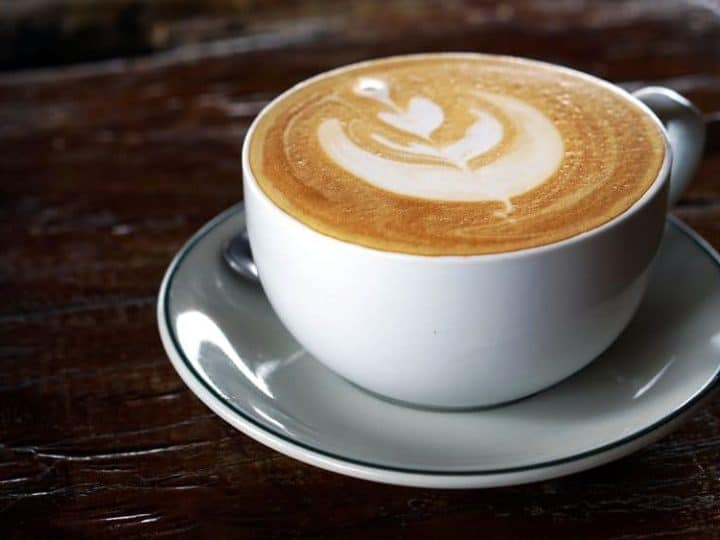

Coffee
Manual Brew V60
V60 sebenarnya adalah sebuah alat seduh kopi dengan metode pour over. V60 akan menghasilkan kopi yang disaring oleh kertas filter. Cita rasa kopi jenis ini bergantung pada over extracted yang terasa pahit atau under extracted yang terasa asam.
Vietnam Drip
Vietnam Drip adalah kopi yang diseduh dengan dripper vietnam dan disajikan bersama susu/krimer kental manis. Karakter biji robusta hasil perkebunan di Vietnam menjadi cikal bakal penyajian minuman ini. Kopi dihasilkan dengan cara diekstrak lewat tetesan menggunakan alat Dripper.
Americano

Americano adalah minuman kopi espresso dengan tambahan air panas. Namanya diambil dari cara orang Amerika meminum espresso. Kopi ini dibuat dengan satu atau dua shot espresso, kemudian ditambahkan air panas di atasnya. Americano kerap disajikan sebanyak 240ml.
Cappucino
Cappuccino adalah minuman khas Italia yang terdiri dari 1/3 espresso, 1/3 susu steamed, dan 1/3 buih susu. Pada dasarnya, minuman ini adalah campuran dari espresso dan susu seperti minuman-minuman berbasis espresso lainnya.
Coffee Latte
Caffé latte atau kopi latte adalah campuran 1/3 espresso dengan 2/3 steamed milk. Buih susu hanya tipis di permukaan. Rasa khas dari kopi ini adalah lebih milky dan creamy, tidak pahit, dan kental. Coffee latte biasanya disajikan dengan gambar di permukaannya.